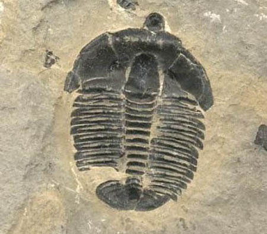

Information

Fossil Type: Trace
Name: Asterichnites octoradialus Brown and Vokes
Formation: Mowry Shale
Age: Late Cretaceous
Location: Western Montana
Notes: Called a 'squid kiss,' this trace is thought to be from a squid either looking for food or a place to lay eggs.
Date Posted: April 1, 2015